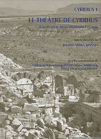

Jeanine Abdul Massih
Cyrrhus 1, Le Theatre de Cyrrhus d'apres les archives d'Edmond Frezouls
Institut Francais du Proche-Orient. Beyrouth, 2012
|  | This first volume of the new series titled Cyrrhus, is dedicated to the excavations of the French mission, particularly to the worked done on the theater between 1952 and 1993. The mission, led by Edmond Frezouls, focused its excavation work on the theater, which was dated to the second half of the second century AD by the excavator himself. This publication is divided into three chapters: The introduction presents the entire work of the mission in a chronological order. The next two chapters are written by Edmond Frezouls on the history of Cyrrhus and Northern Syria as well as the history of the theater. The third and last chapter discusses the recent researches done by the Lebanese-Syrian mission of Cyrrhus on the theater while referencing the old documentation and the archaeological material found by the previous (older) mission. New researches and observations are also included in this volume which will be the starting point for a new publications that will encompass the new day on the theater and on the project as a whole. |
{kind=link}
| Back to Publications | Title Page |
Table of Contents |
{kind=link}